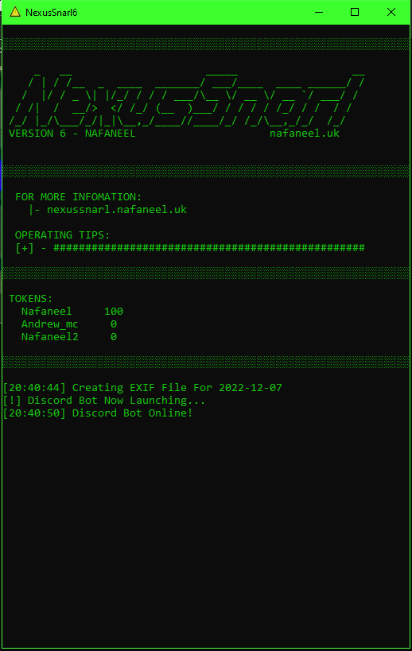
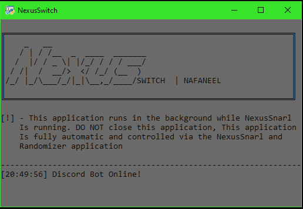
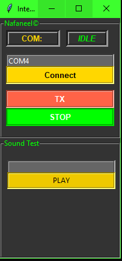
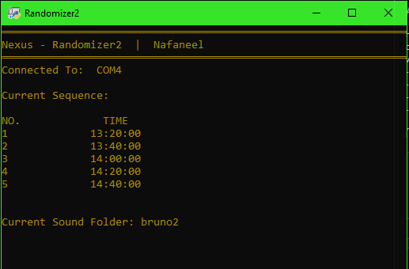

NexusSnarl 6 05/09/22
NexusSnarl version 6 was the most groundbreaking version with a new look and infrastructure behind it.
The main feature of this version was the integration of the USB PTT box which meant that the software
had to be re-written in order to accommodate this feature. There was also upgrades to the UI of the
messaging side of the bot which meant that reading and using functions were much easier.
The software also came with a new package of other programs to assist with the bot these range from
simple set up tools to handy testing programs
Click Here To See the USB Interface
NexusSwitch
NexusSwitch is a standalone bot which used DM messages to control different programs within the Nexus
Software package. This app controls programs such as both Randomizer programs and also ensure control
over the NexusSnarl software like remote stun and reload.
CLICK AN IMAGE TO VIEW

Main NexusSnarl script GUI
instructions

This is a script that would run along side NexusSnarl and would run its
own bot to recive commands to remote shutdown or trigger certain events within NexusSnarl

A lightweight testing application built with Tkinter Python for USB
communication with the NS-Interace

The Randomizer software with pre-set times of activation, A random sound
from the folder 'bruno2' would be selected and played